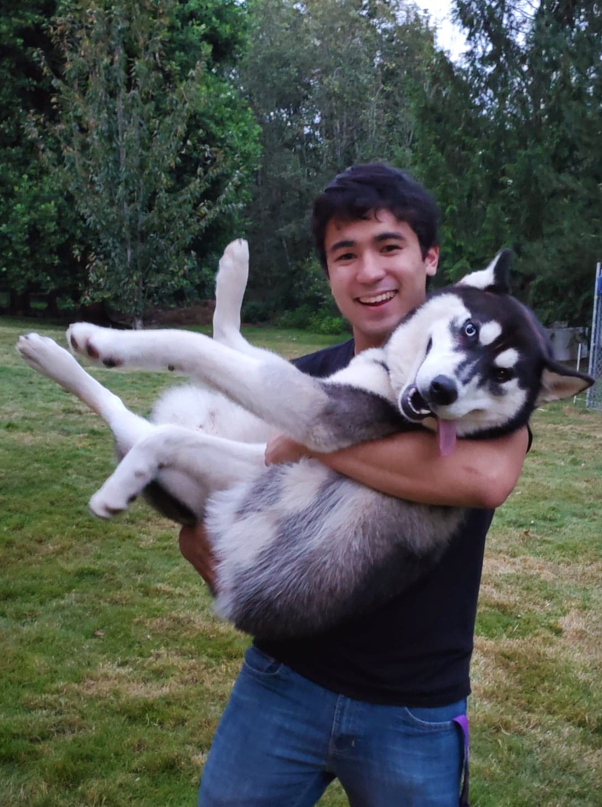

I help computers understand language and images.
Hi!
I'm Ivan Montero, a computer science undergraduate at the University of Washington.I help computers understand language and images.
News
[Aug 2021] Our (Noah's ARK) paper, Sentence Bottleneck Autoencoders from Transformer Language Models, was accepted into EMNLP 2020![Jun 2021] Began at Apple as a Research Intern working on unsupervised representation learning for retrieval on the Siri AI/ML team!
[Jun 2021] Completed my Bachelor's in Computer Science at the University of Washigton!
[Dec 2020] Our (Apple) preprint, Pivot Through English: Reliably Answering Multilingual Questions without Document Retrieval, is now available!
[Sep 2020] Our (Noah's ARK) paper, Plug and Play Autoencoders for Conditional Text Generation, was accepted into EMNLP 2020!
[Sep 2020] Began at Facebook as a Software Engineering Intern working on improving image search representations on the Visual Search Relevance team!
[Jun 2020] Began at Google as a Software Engineering Intern working on optimizing embedding retrieval for search in Google Research!
[Mar 2020] Began at Apple as a Research Intern working on multilingual question answering on the Siri AI/ML team!
Older news
[Jun 2019] Began at Google as a Software Engineering Intern working on billboard detection and physical metric inference on the Ads team![Jun 2018] Began at Google as a Engineering Practicum Intern working on image clustering in Google Research!